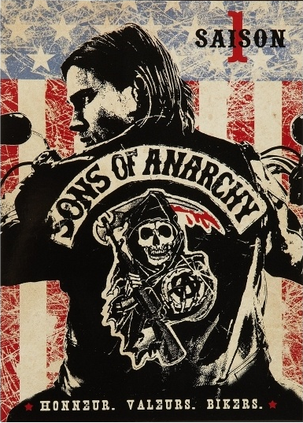
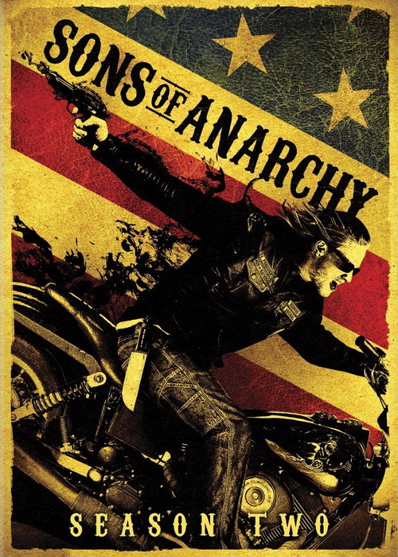
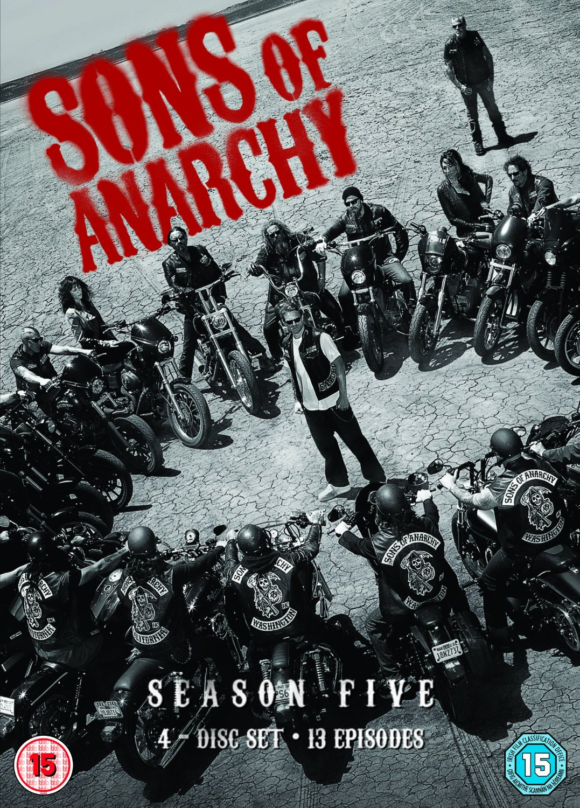

| Сезони | Опис |
| Сезон 1 | 2008 рік. In the pilot episode, Jax's meth-addicted ex-wife Wendy (Drea de Matteo) overdoses while pregnant with his child. An emergency C-section is performed, and a baby boy is delivered 10 weeks prematurely. Wendy had already named the child Abel. Jax visits a storage unit to collect some old baby clothes. There, he discovers a "manifesto" authored by his father, the deceased founder of SAMCRO, describing his hopes for the club. Jax then has a dilemma, as he struggles with the direction the club is taking. Jax's mother, Gemma (Katey Sagal), visits Wendy in the hospital and tells her she will kill her if Wendy attempts to gain custody of Abel. Since Wendy took drugs during pregnancy, Gemma would see to it that the baby "will never call you mommy". A broken-hearted Wendy overdoses on meth, given to her in a syringe stashed in a bible, by Gemma when she visits her in the hospital after the birth. |
| Сезон 2 | 2009 рік. White separatists called the League Of American Nationalists (LOAN) arrive in Charming. LOAN's leader and backer businessman Ethan Zobelle and Zobelle's enforcer, A.J. Weston, seek to drive the Sons of Anarchy from Charming. To send a message to SAMCRO, Zobelle has his daughter Polly lure Gemma into a trap where she is kidnapped and gang raped by Weston and two others. Fueled by SAMCRO’s role in Donna’s death, the rift between Clay and Jax continues to widen as Jax challenges most of Clay's decisions. When a lone car bomb nearly kills Chibs, Clay demands immediate retaliation (against Jax's advice) resulting in Clay, Jax, Bobby, Tig, Juice Ortiz, and Happy's being arrested by the San Joaquin deputies. Finally Gemma breaks the news about the rape to Clay and Jax. |
| Сезон 3 | 2010 рік. Gemma has been hiding in Rogue River, Oregon with Tig at the home of Gemma's father, Nate (Hal Holbrook), who suffers from dementia. Gemma struggles when she takes Nate to his new assisted living home, and he pleads to be taken back to his house. She returns to Charming to reunite with her grandson, unaware he has been kidnapped. The return of A.T.F agent Stahl twists the facts about the murder of Donna, Stahl attempts to make a deal with Jax behind the club's back. Father Kellan Ashby's sister, Maureen, contacts Gemma at Ashby's request and tells her Abel is safe in Belfast. Upon learning of her grandson's abduction, Gemma suffers a cardiac arrhythmia and collapses in the Teller-Morrow lot. After the club returns from Ireland and brings home Abel, agent Stahl double crosses Jax and tells the club about the side deal Jax made with her, unaware that Jax and the club had it planned all along knowing Stahl would back out of the deal. Jax, Clay, Bobby, Tig, and Happy are hauled away to jail. While Opie, Chibbs, and the Prospects are all en route following Stahl. Opie kills Stahl to avenge the death of his wife, Donna. |
| Сезон 4 | 2011 рік. The imprisoned SAMCRO members leave the penitentiary after their 14-month stay and are met by Lieutenant Eli Roosevelt of the San Joaquin Sheriff's Department, the new law enforcement presence in Charming. They also discover Hale has become the mayor. US Attorney Lincoln Potter seeks Lieutenant Roosevelt's help to build a RICO case against SAMCRO. |
| Сезон 5 | 2012 рік. In retaliation for the death of Veronica Pope (Laroy's girlfriend who was also the daughter of powerful Oakland kingpin Damon Pope), the Niners attack SAMCRO and ambush a cargo shipment. With the death of Piney Winston and the growing conflict between the Niners and SAMCRO, along with several home invasions targeting people linked to the Club, Jax is forced to meet with Damon Pope, to face a new threat unlike anything SAMCRO has ever faced. |
| Сезон 6 | 2013 рік. Following the arrest of Tara and Clay, Jax struggles to hold SAMCRO together while Tara is imprisoned. Toric approaches both Tara and Clay and offers them deals in exchange for giving up SAMCRO; both initially refuse, but Clay later relents when confronted with being thrown into the prison's general population and assuredly being killed by inmates paid off by Damon Pope's men as a retaliation for Pope's murder. Juice returns to Charming after helping Bobby relocate after stepping down as VP, which angers Chibs, who doesn't believe Juice has been punished enough for talking to cops and later beats him. With the growing romance between Gemma and Nero, the death of Clay Morrow, and death of Tara, the tables get turned and club starts to go in a new darker direction. |
| Сезон 7 | 2014 рік. Jax struggles with the death of Tara and turns himself in. While in jail Jax makes new alliances to further the club. Fighting against Damon Pope's right-hand man Marks. Gemma and Juice are on the run hiding from the club. Jax uses the club to exact revenge on the people he believes killed his wife. The death of Bobby Munson fuels the hate and lies made by Gemma and Juice. With Nero struggling to adapt to Gemma's lifestyle and SAMCRO falling apart, Jax is forced to make the ultimate sacrifice to save his children. |